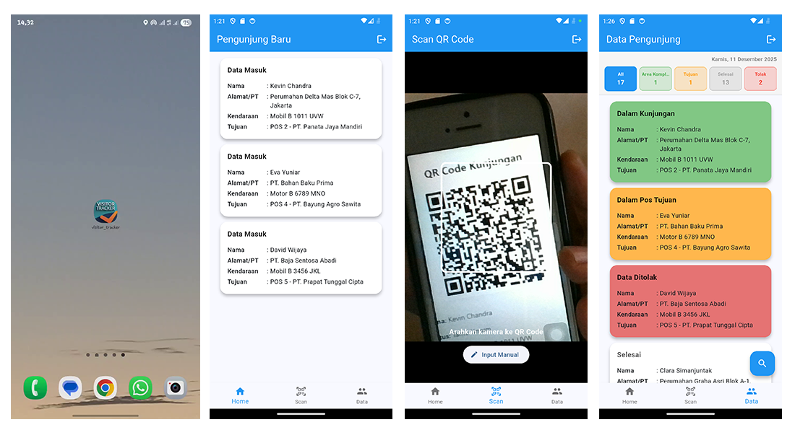

Extension Buka Banyak Tab
Automation Tool (Batch & Excel Integration)
Tools: Notepad (Batch scripting), Microsoft Excel, VSCode
Proyek pribadi yang saya buat saat menjabat sebagai Image Editor. Extension berbentuk file batch (.bat) yang memungkinkan membuka banyak tab/URL atau folder sekaligus hanya dengan dua kali klik. File ini bisa diedit langsung di Notepad untuk menambah/mengurangi daftar link.
Alur Kerja Pembuatan
- Identifikasi masalah: membuka puluhan tab produk/gambar secara manual memakan waktu lama.
- Buat script batch sederhana (.bat) dengan perintah start untuk membuka URL/folder.
- Integrasi dengan Excel: list URL di sheet, export ke .bat via macro sederhana.
- Test & debug: pastikan kompatibel Windows, handle error jika link invalid.
- Distribusi: bagikan ke tim sebagai file executable sederhana.
Case Study Mini
Extension Auto Click
Browser / VSCode Automation Tool
Tools: JavaScript, VSCode, Browser Extension (Manifest V3)
Proyek pribadi saat menjabat sebagai Rich Content Specialist. Extension yang di-install di browser (atau VSCode) untuk otomatis mengklik tombol/elemen tertentu pada halaman/tab yang sama dalam satu window. Sangat berguna untuk tugas repetitif seperti approve konten atau klik tombol di dashboard.
Alur Kerja Pembuatan
- Identifikasi tugas repetitif di dashboard e-commerce (klik tombol berulang).
- Buat extension sederhana dengan content script JS untuk detect elemen target.
- Tambahkan popup/button trigger untuk mengaktifkan auto-click.
- Test di browser (Chrome/Edge) dan VSCode jika diadaptasi.
- Debug: pastikan hanya berjalan di tab/window aktif, tidak mengganggu user experience.
Case Study Mini
Website ElektroArt
Website Portal Teknologi (Tugas Kampus)
Tools: Visual Studio Code, HTML5, CSS3, JavaScript
Website portal teknologi bernama ElektroArt yang berisi informasi produk elektronik (laptop, smartphone, tablet), artikel tutorial, dan berita teknologi. Dirancang sebagai media informasi yang informatif dan menarik secara visual.
Alur Kerja Pembuatan
- Riset konten: kategori produk elektronik + topik tutorial/berita.
- Desain struktur: homepage → kategori produk → artikel detail.
- Implementasi: HTML untuk struktur, CSS responsif, JS untuk interaksi sederhana (filter, carousel).
- Optimasi visual: layout grid, card produk, dark/light mode toggle.
- Test & deploy: cross-browser, mobile responsive.
Case Study Mini


Aplikasi Barcode Scanner Parking
Mobile App (Tugas Kampus)
Tools: Android Studio, Kotlin + Jetpack Compose, Google Sheets API
Sistem informasi manajemen parkir berbasis Android untuk kawasan industri. Menggunakan pemindaian barcode pada stiker kendaraan sebagai kontrol akses masuk/keluar.
Komplek industri merupakan kawasan dengan aktivitas tinggi... (abstrak lengkap seperti yang kamu berikan, saya singkatkan di sini untuk tampilan rapi)
Alur Kerja Sistem
- Karyawan ajukan stiker parkir ke personalia.
- Personalia verifikasi dokumen & lanjut ke GA.
- GA terbitkan stiker dengan barcode unik.
- Petugas keamanan scan barcode di gerbang untuk log masuk/keluar.
- Data tersimpan di Google Sheets untuk monitoring & laporan.
Case Study Mini
Sistem Manajemen Visitor (Flutter + PHP)
Hybrid Web & Mobile App (Tugas Kampus)
Tools: VSCode, Flutter (mobile), PHP + MySQL (backend), XAMPP, HTML/CSS/JS (web)
Aplikasi manajemen visitor untuk kompleks industri ADR Group: registrasi mandiri, validasi QR multi-pos, monitoring pergerakan, dan pelaporan data.
Penelitian ini membahas perancangan dan pengembangan aplikasi manajemen visitor... (abstrak lengkap, saya ringkas untuk tampilan)
Alur Kerja Sistem
- Tamu registrasi mandiri via web (Bootstrap/React).
- Admin verifikasi & generate QR Code.
- Visitor berjalan ke pos tujuan.
- Security di pos tujuan validasi menggunakan app Flutter (scan QR).
- Visitor selesai → kembali ke pos utama untuk validasi akhir & akhiri kunjungan.
Case Study Mini
